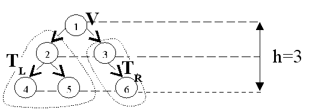
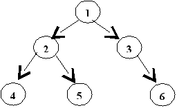

Глава 1 Двоичные деревья
1 Основные определения и понятия
2 Различные обходы двоичных деревьев
3 Вычисление основных характеристик дерева
1 Основные определения и понятия
Определим двоичное дерево следующим образом :
- Отдельная вершина V является двоичным деревом.
- Двоичное дерево - это вершина V, соединенная с (возможно пустыми) левым (ТL) и правым (ТR) двоичными деревьями.
Пример двоичного дерева приведен на следующем рисунке.

Рисунок 1 - Пример двоичного дерева Б
Вершины дерева обозначаются кружочками, связи между вершинами стрелками.
Каждая вершина дерева может содержать какую-либо информацию. Выделенная вершина дерева называется корнем. Концевые вершины дерева, не имеющие поддеревьев, называются листьями. Дуги ориентированы по направлению от корня к листьям. Путь от корня к листу называется ветвью. Под длиной ветви будем понимать число входящих в неё вершин. Высота дерева h определяется как число вершин в самой длинной ветви дерева. Размер дерева - число входящих в него вершин. Средней высотой дерева называется усредненная по количеству вершин в дереве сумма длин путей от корня к каждой вершине.
Приведем некоторые свойства двоичных деревьев.
Свойство 1. Максимальное число вершин в двоичном дереве высоты h равно
nmax(h)= 2h - 1
Свойство 2. Минимально возможная высота двоичного дерева с n вершинами равна hmin(n) = [log(n+1)]
2 Различные обходы двоичных деревьев
При разработке алгоритмов для работы с деревьями будем считать, что каждая вершина содержит некоторые данные и указатели на вершины слева и справа. Поэтому вершина дерева это переменная специального типа. В качестве заголовка для дерева используем переменную Root, указывающую на корень.
type pVertex = ^tVertex;
Vertex =record; tData: integer;
Left: pVertex;
Right: pVertex;
end;
VAR Root: pVertex;
При решении многих задач, связанных с деревьями, часто возникает необходимость перебрать все вершины дерева или совершить обход дерева, чтобы выполнить некоторые действия с каждой вершиной дерева.
Существуют три основных порядка обхода дерева:
- Сверху
вниз (
 ): корень,
левое поддерево, правое поддерево.
): корень,
левое поддерево, правое поддерево.
- Слева
направо (
 ): левое
поддерево, корень, правое поддерево.
): левое
поддерево, корень, правое поддерево.
- Снизу
вверх (
 ): левое
поддерево, правое поддерево, корень.
): левое
поддерево, правое поддерево, корень.

Рисунок 2
Пример: . Совершить обход слева направо для двоичного дерева, изображенного на рисунке 28.
Результат обхода: 4 2 5 1 3 6 Обходы легко программируются с помощью рекурсивных процедур.
Алгоритм на псевдокоде
Обход слева направо(p: pVertex)
IF(p  NIL)
NIL)
Обход слева направо (pLeft)
Печать(pData)
Обход слева направо (pRight)
FI
3 Вычисление основных характеристик дерева
Приведем алгоритмы для вычисления различных
характеристик двоичных деревьев.
Определение размера дерева
Алгоритм на псевдокоде
Размер(p:pVertex)
IF(p = NIL) := 0
ELSE Размер := 1 + Размер (pLeft)+ Размер (pRight)
FI
Определение высоты дерева
Алгоритм на псевдокоде
Высота(p:pVertex)
IF(p = NIL) Высота := 0
ELSE Высота := 1+ max(Высота(pLeft), Высота(pRight))
FI
Определение средней высоты дерева
Для определения средней высоты дерева понадобится функция вычисления суммы длин путей от корня до каждой вершины на L-том уровне.
Алгоритм на псевдокоде
СДП (p: pVertex; L: уровень вершины)
IF (p = NIL) СДП:= 0
ELSE
СДП:= L + СДП(p
Left, L+1) + СДП(p
Right, L+1)
FI
Тогда средняя высота вычисляется следующим образом
hcp
:= СДП(Root, 1)/ Размер(Root)
Определение контрольной суммы для дерева
Алгоритм на псевдокоде
Сумма (p:pVertex)
IF (p = NIL) Сумма:= 0
ELSE Сумма:=pData + Сумма(pLeft)+ Сумма(pRight
)
FI
Контрольные вопросы
- Дайте определение двоичного дерева.
- Что такое высота дерева? Средняя высота?
- Что такое обход дерева?
- Назовите основные обходы дерева.